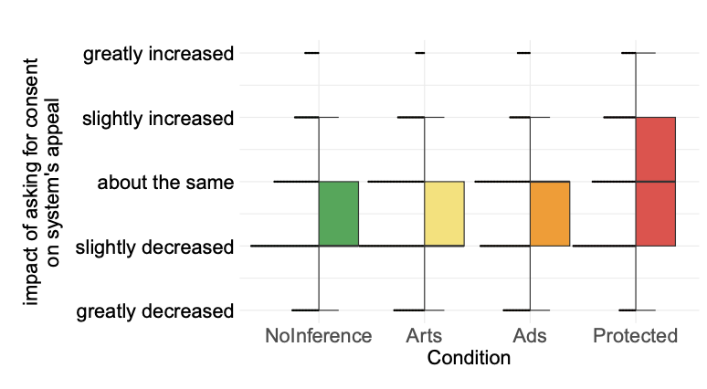
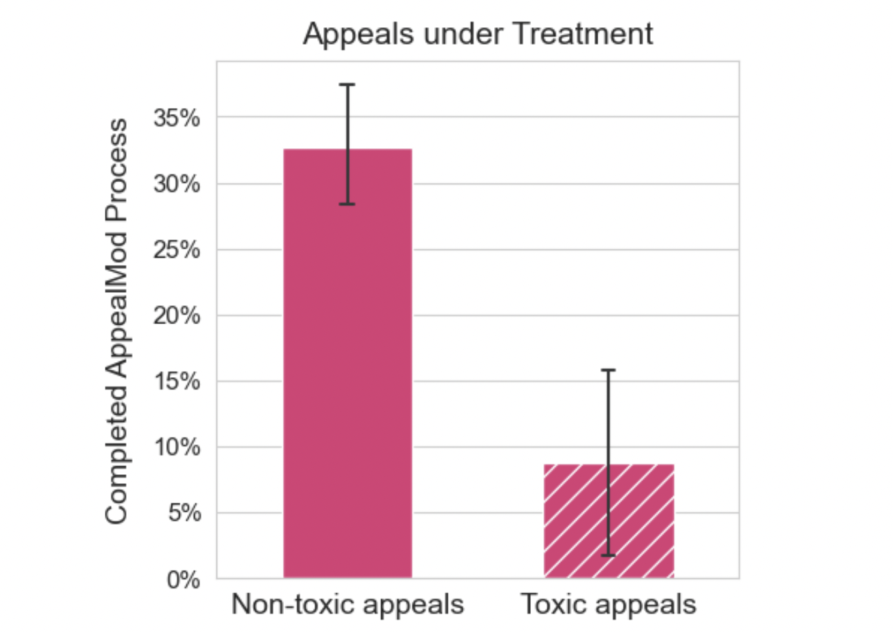
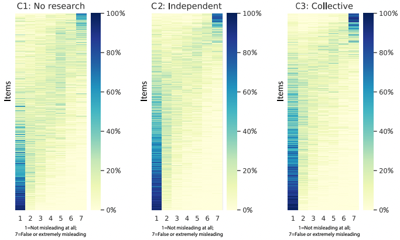
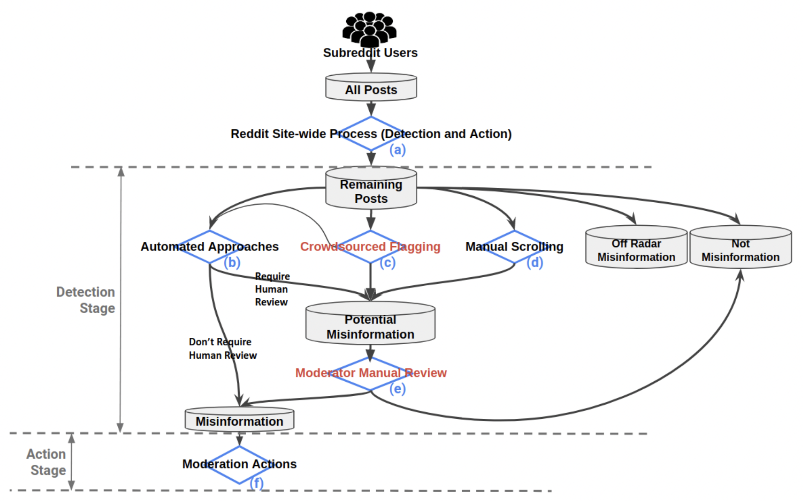
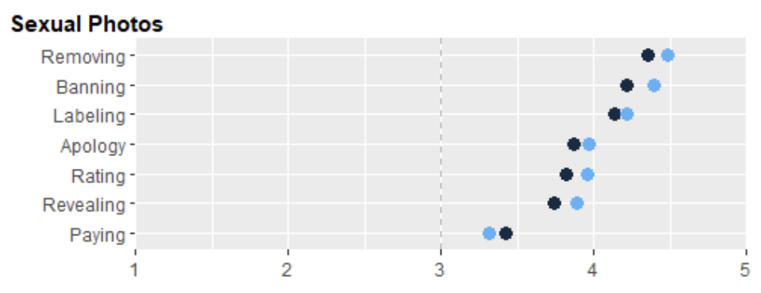
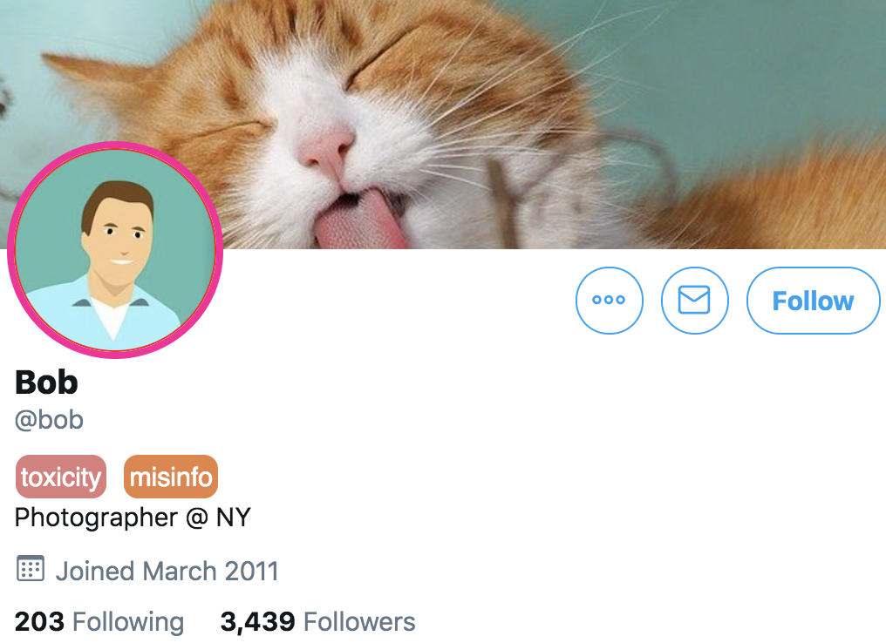
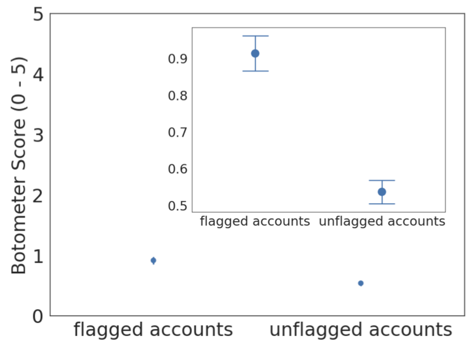
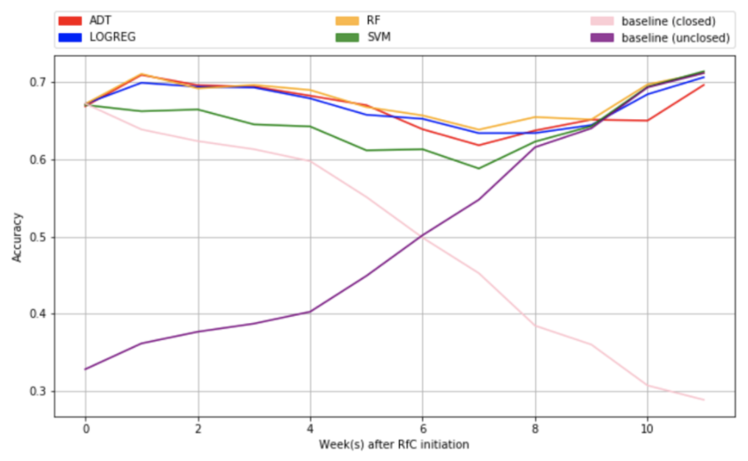
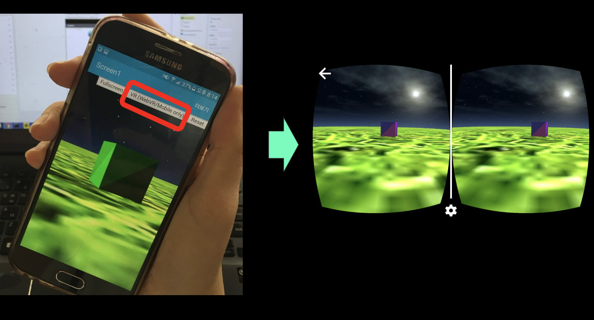
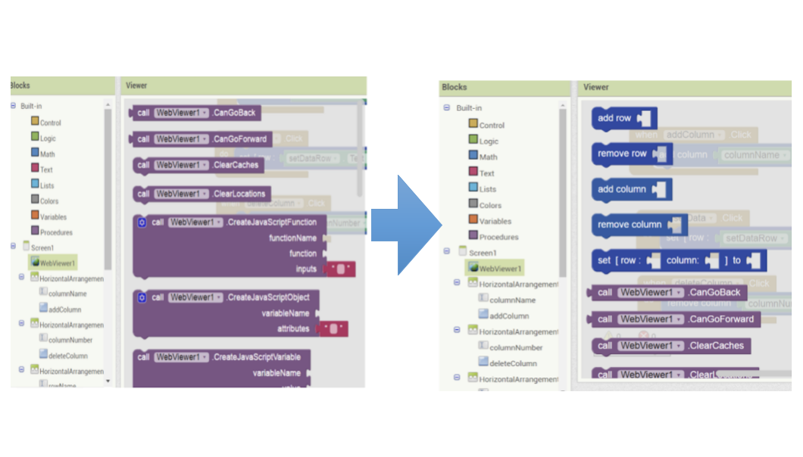

Selected First Author Publications
Full Papers

Less is Not More: Improving Findability and Actionability of Privacy Controls for Online Behavioral Advertising
Jane Im, Ruiyi Wang, Weikun Lyu, Nick Cook, Hana Habib, Lorrie Cranor, Nikola Banovic, Florian Schaub
CHI 2023
Jane Im, Ruiyi Wang, Weikun Lyu, Nick Cook, Hana Habib, Lorrie Cranor, Nikola Banovic, Florian Schaub
CHI 2023
Covered by The Wall Street Journal (The article is behind a paywall, but UMSI also wrote about it here.)
Selected to present at PrivacyCon 2024 (hosted by FTC)
Selected to present at PrivacyCon 2024 (hosted by FTC)

Yes: Affirmative Consent as a Theoretical Framework for Understanding and Imagining Social Platforms
Jane Im, Jill Dimond, Melody Berton, Una Lee, Katherine Mustelier, Mark Ackerman, Eric Gilbert
CHI 2021 Best Paper Honorable Mention
Jane Im, Jill Dimond, Melody Berton, Una Lee, Katherine Mustelier, Mark Ackerman, Eric Gilbert
CHI 2021 Best Paper Honorable Mention
I want to give a shoutout to the incredible Una Lee. This work builds on and could not have existed without Una's impactful work on consentful technologies. Una introduced the term "consentful technology"—which inspired many people, including me.
Posters

Understanding How to Design a Social Computing System that Helps PhD Students Collectively Navigate Mistreatment or Abuse in Advising Relationships
Jane Im, Kentaro Toyama
CHI 2024 Extended Abstract
Jane Im, Kentaro Toyama
CHI 2024 Extended Abstract
forthcoming
Organized Panel Proposals

Improving Advising Relationships Between PhD Students and Faculty in Human-Computer Interaction
Jane Im, Himanshu Zade, Steve Oney, Pamela Wisniewski, Kentaro Toyama
CHI 2024 Extended Abstract
Jane Im, Himanshu Zade, Steve Oney, Pamela Wisniewski, Kentaro Toyama
CHI 2024 Extended Abstract
Other Publications

"I know even if you don't tell me": Understanding Users' Privacy Preferences Regarding AI-based Inferences of Sensitive Information for Personalization.
Sumit Asthana, Jane Im, Zhe Chen, Nikola Banovic
CHI 2024
Sumit Asthana, Jane Im, Zhe Chen, Nikola Banovic
CHI 2024

AppealMod: Inducing Friction to Reduce Moderator Workload of Handling User Appeals
Shubham Atreja, Jane Im, Paul Resnick, Libby Hemphill
CSCW 2024
Shubham Atreja, Jane Im, Paul Resnick, Libby Hemphill
CSCW 2024

Searching For or Reviewing Evidence Improves Crowdworkers' Misinformation Judgments and Reduces Partisan Bias
Paul Resnick, Aljohara Alfayez, Jane Im, Eric Gilbert
Collective Intelligence 2023
Paul Resnick, Aljohara Alfayez, Jane Im, Eric Gilbert
Collective Intelligence 2023

Wisdom of Two Crowds: Current Practices of Misinformation Moderation on Reddit and How to Improve this Process-A Case Study of COVID-19
Lia Bozarth, Jane Im, Christopher Quarles, Ceren Budak
CSCW 2023
Lia Bozarth, Jane Im, Christopher Quarles, Ceren Budak
CSCW 2023

Solving Separation-of-Concerns Problems in Collaborative Design of Human-AI Systems through Leaky Abstractions
Hariharan Subramonyam, Jane Im, Colleen Seifert, Eytan Adar
CHI 2022
Hariharan Subramonyam, Jane Im, Colleen Seifert, Eytan Adar
CHI 2022

Women’s Perspectives on Harm and Justice after Online Harassment
Jane Im, Sarita Schoenebeck, Marilyn Iriarte, Gabriel Grill, Daricia Wilkinson, Amna Batool, Rahaf Alharbi, Audrey N. Funwie, Tergel Gankhuu, Eric Gilbert, Mustafa Naseem
CSCW 2022
Jane Im, Sarita Schoenebeck, Marilyn Iriarte, Gabriel Grill, Daricia Wilkinson, Amna Batool, Rahaf Alharbi, Audrey N. Funwie, Tergel Gankhuu, Eric Gilbert, Mustafa Naseem
CSCW 2022

Synthesized Social Signals: Computationally-Derived Social Signals from Account Histories
Jane Im, Sonali Tandon, Eshwar Chandrasekharan, Taylor Denby, Eric Gilbert
CHI 2020
Jane Im, Sonali Tandon, Eshwar Chandrasekharan, Taylor Denby, Eric Gilbert
CHI 2020


Deliberation and Resolution on Wikipedia: A Case Study of Requests for Comments
Jane Im, Amy X Zhang, Christopher J Schilling, David Karger
CSCW 2018
Jane Im, Amy X Zhang, Christopher J Schilling, David Karger
CSCW 2018

App Inventor VR Editor for Computational Thinking
Jane Im, Paul Medlock-Walton, Mike Tissenbaum
CTE 2017
Jane Im, Paul Medlock-Walton, Mike Tissenbaum
CTE 2017
Non-publication projects

Customized blocks in MIT App Inventor
I implemented a new feature called “user-defined blocks (customizable blocks)” into MIT App Inventor,
an open source web platform that lets users build their own Android Apps quickly by using blocks-based programming.
I became interested into the system-building aspect of HCI through this project.
final report - slides - demo
I became interested into the system-building aspect of HCI through this project.
final report - slides - demo